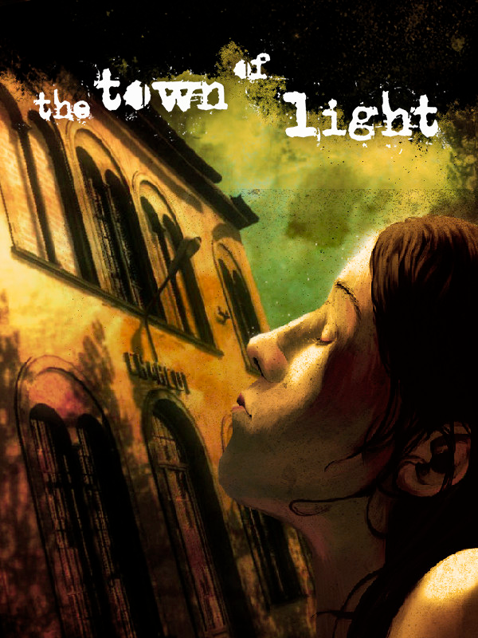

The Town of Light
Details
|  | |
| Playtime | Not Played |
| Last Activity | Never |
| Added | 30/12/2024 19:23:06 |
| Modified | 18/05/2025 1:53:55 |
| Completion Status | Not Played |
| Library | Gog |
| Source | GOG |
| Platform | PC (Windows) |
| Release Date | 26/02/2016 |
| Community Score | 70 |
| Critic Score | 58 |
| User Score | |
| Genre | Adventure Indie |
| Developer | LKA |
| Publisher | LKA Wired Productions |
| Feature | Single Player |
| Links | Twitter Steam GOG Epic Discord Twitch Official YouTube |
| Tag | Action Adventure Amazon Luna Atmospheric Choose Your Own Adventure Exploration Female Protagonist First-Person Great Soundtrack Historical Horror Indie Mystery Nudity Open World Psychological Psychological Horror Story Rich Walking Simulator |
Description
12 March 1938. Renée, 16 years old, is ripped out of her world, locked up and deprived of everything.
Her only fault was that she didn't know what her place in the world was.
"A danger to herself and others and a cause of public scandal" wrote the police headquarters.
The only horror you will find in this game is the truth: a blow to the solar plexus, much more intense than any supernatural presence
The Town of Light is a psychological adventure told in the first person. The story is set in Italy in the first half of the 20th Century in a place which really existed and has been meticulously reconstructed. Exploring and interacting with the environment you will relive the history of the main character through her confused viewpoint and on the basis of your choices, the story will develop in different ways.
Because of its contents, the game is intended only for adult users.
Her only fault was that she didn't know what her place in the world was.
"A danger to herself and others and a cause of public scandal" wrote the police headquarters.
The only horror you will find in this game is the truth: a blow to the solar plexus, much more intense than any supernatural presence
The Town of Light is a psychological adventure told in the first person. The story is set in Italy in the first half of the 20th Century in a place which really existed and has been meticulously reconstructed. Exploring and interacting with the environment you will relive the history of the main character through her confused viewpoint and on the basis of your choices, the story will develop in different ways.
Because of its contents, the game is intended only for adult users.
Characteristics:
- Realistic 3d graphics
- Based on real facts and events.
- Strong narrative component
- No zombies or supernatural presences.
- Original sound track.
Follow us on:
Check out our next game!